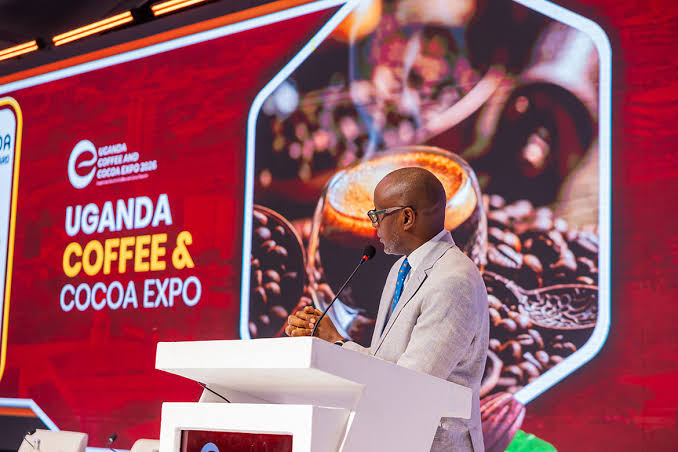

The Uganda International Coffee Expo 2026 is a major agricultural exhibition organised by the Ministry of Agriculture, Animal Industry and Fisheries (MAAIF). The event brings together coffee farmers, processors, exporters, investors and other industry stakeholders.
Hosted at Speke Resort Munyonyo from 16th to 18th September 2026, the expo provides an opportunity to explore modern coffee production technologies, promote international trade and strengthen Uganda's position in the global coffee industry.
Expected Attendees
Exhibitor Booths
Countries
Speakers